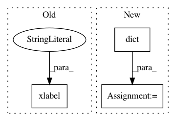

64be522285d5eeea4e3fb4c6df133984fc65b74e,examples/time_frequency/plot_compute_source_psd_epochs.py,,,#,22
Before Change
plt.figure()
plt.plot(freqs, psd_avg)
plt.xlabel("Freq (Hz)")
plt.ylabel("Power Spectral Density")
plt.show()
After Change
//////////////////////////////////////////////////////////////////////////////////////////////////////////////////////////////////////////////////////////////
// Visualize the 10 Hz PSD:
brain = stc.plot(initial_time=10., hemi="lh", views="lat", // 10 HZ
clim=dict(kind="value", lims=(20, 40, 60)),
smoothing_steps=3, subjects_dir=subjects_dir)
brain.add_label(label, borders=True, color="k")
//////////////////////////////////////////////////////////////////////////////////////////////////////////////////////////////////////////////////////////////
// Visualize the entire spectrum:
In pattern: SUPERPATTERN
Frequency: 3
Non-data size: 3
Instances
Project Name: mne-tools/mne-python
Commit Name: 64be522285d5eeea4e3fb4c6df133984fc65b74e
Time: 2018-09-08
Author: larson.eric.d@gmail.com
File Name: examples/time_frequency/plot_compute_source_psd_epochs.py
Class Name:
Method Name:
Project Name: scipy-lectures/scipy-lecture-notes
Commit Name: f47b16d2de5ca35c034cb53a70fbbe330ea43f97
Time: 2012-08-10
Author: gael.varoquaux@normalesup.org
File Name: advanced/mathematical_optimization/examples/plot_gradient_descent.py
Class Name:
Method Name:
Project Name: mne-tools/mne-python
Commit Name: 0706ad95fa091003f29bd1d568a17324453bb297
Time: 2018-09-15
Author: jasmainak@users.noreply.github.com
File Name: examples/inverse/plot_lcmv_beamformer_volume.py
Class Name:
Method Name: